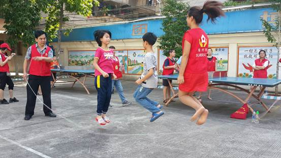

“全国助残日”梅州开展形式多样的志愿助残活动
桂电志愿者网 日期：2015-05-25 来源：
5月17日是第二十五个法定“全国助残日”，为弘扬“奉献、友爱、互助、进步”的志愿者精神，倡议更多人关心关爱残疾青少年健康成长，在梅州团市委、市志愿者联合会精心组织下，全市各县（市、区）团委、志愿者组织开展形式多样、内容丰富的志愿助残活动。
5月17日上午，由梅州市爱心家园义工团、梅州市行政服务中心等单位的志愿者近60人来到市特殊教育学校开展“心手相牵 共享阳光”为主题志愿助残活动，志愿者与特殊教育学校的孩子们一起进行了手牵手、心连心的交流。操场上，志愿者与学生拔河比赛、乒乓球赛、两人三足赛、投篮比赛……,饭堂里，志愿者与学生一起包饺子，准备共进午餐等活动。在梅江区福利院，由梅州市嘉城义工协会也同样在这里开展“心手相牵 共享阳光”为主题志愿助残活动，志愿者与福利院孤儿一起唱歌、一起跳舞等联欢活动，同时为他们送来学习用品和生活用品。在院士广场，广东狮子会嘉应服务队组织1000名爱心人士举办“爱生活，跑出色”彩色慢跑活动，共为白内障患者筹集了20万元善款。在兴宁，兴宁市小鱼义工协会等单位正在走访残疾人家庭，登记培训需求、求职需求、康复需求，通过志愿助残活动促进残疾人融入社会，参与社会，确保残疾人有力能做，有才能施。
（志愿者与特殊教育学校学生玩游戏）

（志愿者与特殊教育学校学生玩跳绳）
（志愿者与特殊教育学校学生一起包饺子，准备共进午餐）
志愿助残活动自从2014年启动以来，梅州团市委联合相关部门完成全市34家残疾人机构和助残志愿组织“1+1”结对，完成全市35周岁以下残疾青少年基本情况摸底，建立2个省级志愿助残服务阵地联系点和成立梅州市自闭症互助协会等工作，开展以“社会融入、亲情陪伴、阳光课堂”为重点的志愿助残“三个一”主题活动，帮助残疾青少年提升技能、建立自信，感受到社会的温暖。同时也通过广泛开展志愿助残活动，动员社会各界积极参与助残活动，让更多的人来奉献爱心，共同关注残疾人的成长和未来。
（“爱生活，跑出色”彩色慢跑活动，为志愿助残活动筹款）
（志愿者与梅江区福利院的残疾青少年互动）

（志愿者登记残疾人培训、求职、康复需求）
【责任编辑：李博晶】